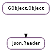

| static | error_quark() |
| static | new(node) |
| count_elements() | |
| count_members() | |
| end_element() | |
| end_member() | |
| get_boolean_value() | |
| get_double_value() | |
| get_error() | |
| get_int_value() | |
| get_member_name() | |
| get_null_value() | |
| get_string_value() | |
| get_value() | |
| is_array() | |
| is_object() | |
| is_value() | |
| list_members() | |
| read_element(index_) | |
| read_member(member_name) | |
| set_root(root) |
None
| Name | Type | Access |
|---|---|---|
| parent_instance | GObject.Object | r |
Bases: GObject.Object
The Json.Reader structure contains only private data and should only be accessed using the provided API
| Parameters: | node (Json.Node or None) – a Json.Node, or None |
|---|---|
| Returns: | the newly created Json.Reader. Use GObject.Object.unref () to release the allocated resources when done |
| Return type: | Json.Reader |
Creates a new Json.Reader. You can use this object to read the contents of the JSON tree starting from node
| Returns: | the number of elements, or -1. In case of failure the Json.Reader is set in an error state |
|---|---|
| Return type: | int |
Counts the elements of the current position, if reader is positioned on an array
| Returns: | the number of members, or -1. In case of failure the Json.Reader is set in an error state |
|---|---|
| Return type: | int |
Counts the members of the current position, if reader is positioned on an object
Moves the cursor back to the previous node after being positioned inside an array
This function resets the error state of reader, if any was set
Moves the cursor back to the previous node after being positioned inside an object
This function resets the error state of reader, if any was set
| Returns: | the boolean value |
|---|---|
| Return type: | bool |
Retrieves the boolean value of the current position of reader
| Returns: | the floating point value |
|---|---|
| Return type: | float |
Retrieves the floating point value of the current position of reader
| Returns: | the pointer to the error, or None |
|---|---|
| Return type: | GLib.GError |
Retrieves the GLib.Error currently set on reader, if the Json.Reader is in error state
| Returns: | the integer value |
|---|---|
| Return type: | int |
Retrieves the integer value of the current position of reader
| Returns: | the name of the member, or None |
|---|---|
| Return type: | str |
Retrieves the name of the current member.
| Returns: | True if ‘null’ is set, and False otherwise |
|---|---|
| Return type: | bool |
Checks whether the value of the current position of reader is ‘null’
| Returns: | the string value |
|---|---|
| Return type: | str |
Retrieves the string value of the current position of reader
| Returns: | a Json.Node, or None. The returned node is owned by the Json.Reader and it should not be modified or freed directly |
|---|---|
| Return type: | Json.Node |
Retrieves the Json.Node of the current position of reader
| Returns: | True if the Json.Reader is on an array, and False otherwise |
|---|---|
| Return type: | bool |
Checks whether the reader is currently on an array
| Returns: | True if the Json.Reader is on an object, and False otherwise |
|---|---|
| Return type: | bool |
Checks whether the reader is currently on an object
| Returns: | True if the Json.Reader is on a value, and False otherwise |
|---|---|
| Return type: | bool |
Checks whether the reader is currently on a value
| Returns: | a newly allocated, None-terminated array of strings holding the members name. Use GLib.strfreev () when done. |
|---|---|
| Return type: | [str] |
Retrieves a list of member names from the current position, if reader is positioned on an object.
| Parameters: | index_ (int) – the index of the element |
|---|---|
| Returns: | True on success, and False otherwise |
| Return type: | bool |
Advances the cursor of reader to the element index_ of the array or the object at the current position.
You can use the Json.Reader.get_value family of functions to retrieve the value of the element; for instance:
json_reader_read_element (reader, 0);
int_value = json_reader_get_int_value (reader);
After reading the value, Json.Reader.end_element () should be called to reposition the cursor inside the Json.Reader, e.g.:
json_reader_read_element (reader, 1);
str_value = json_reader_get_string_value (reader);
json_reader_end_element (reader);
json_reader_read_element (reader, 2);
str_value = json_reader_get_string_value (reader);
json_reader_end_element (reader);
If reader is not currently on an array or an object, or if the index_ is bigger than the size of the array or the object, the Json.Reader will be put in an error state until Json.Reader.end_element () is called.
| Parameters: | member_name (str) – the name of the member to read |
|---|---|
| Returns: | True on success, and False otherwise |
| Return type: | bool |
Advances the cursor of reader to the member_name of the object at the current position.
You can use the Json.Reader.get_value family of functions to retrieve the value of the member; for instance:
json_reader_read_member (reader, "width");
width = json_reader_get_int_value (reader);
After reading the value, Json.Reader.end_member () should be called to reposition the cursor inside the Json.Reader, e.g.:
json_reader_read_member (reader, "author");
author = json_reader_get_string_value (reader);
json_reader_end_element (reader);
json_reader_read_element (reader, "title");
title = json_reader_get_string_value (reader);
json_reader_end_element (reader);
If reader is not currently on an object, or if the member_name is not defined in the object, the Json.Reader will be put in an error state until Json.Reader.end_member () is called.